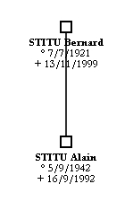

Un seul parent - Prénom usuel différent du premier - Accès rapide dans une liste - Modèles d'étiquettes - Difficultés pour sélectionner des objets - Impression avec des marges - Obtenir des images de grande dimension
|  |
GénéGraphe montre les deux parents d'une personne quand on clique sur le bouton d'ajout des parents. Parfois, on veut n'avoir qu'un des parents. Pour cela, vous avez trois possibilités :
|
Si le prénom usuel d'une personne n'est pas le premier, il faut modifier la fiche de la personne dans Généamania comme cela est expliqué pour les modèles d'étiquette de personne.
Dans les listes (par exemple celle de choix d'une personne), vous pouvez aller très rapidement à une ligne de la façon suivante :
La liste va alors directement à la première ligne qui correspond à votre saisie.
Si vous voulez disposer d'étiquettes libres identiques, vous pouvez en définir une dans un arbre que vous appelez par exemple "Modèle". Pour utiliser ce modèle dans un autre arbre, utilisez la fonction Importer.
Si plusieurs objets se chevauchent et que vous avez des difficultés pour les sélectionner, utilisez le menu de sélection pour qu'un clic à un endroit ne concerne que les objets que vous voulez sélectionner.
Certaines imprimantes ne peuvent pas imprimer sur la totalité de la page, elles laissent une marge autour de la page. Si vous voulez ne rien mettre dans cette marge alors que votre arbre occupe plusieurs pages, vous pouvez changer la dimension de la page, par exemple 200 mm en largeur et 287 mm en hauteur. Quand vous générez un fichier PDF et que vous l'imprimez, l'arbre sera limité à la dimension de 200 mm par 287 mm. Les traits qui passent d'une page à l'autre resteront à l'intérieur des marges. Il suffit de découper la marge qui n'est pas utilisée par l'imprimante et vous pouvez assembler vos feuilles correctement.
Si vous voulez obtenir des images de grande dimension, il suffit de changer les dimensions de la page pour mettre les valeurs que vous voulez obtenir.